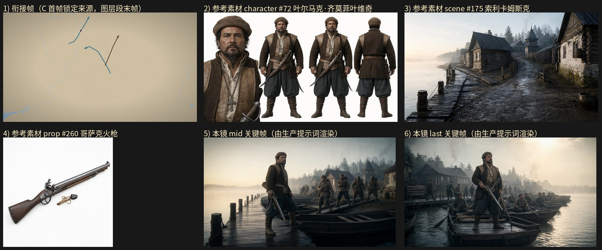

旁白：1581年9月初，小叶率领1340名部众，从卡马河沿岸的卡里索姆斯南部出发
设计卡预算：layer 4.5 s + gen 6.5 s；mid_frame_time（OLD）7.5 s
NEW 原地重写：关键帧任务墙钟 35.0s / 3 次调用 / 峰值提示词 67529 tokens / 完成 2108 tokens；视频任务墙钟 40.0s / 3 次调用 / 峰值提示词 68593 tokens / 完成 2207 tokens；保存 成功
NEW-scratch：关键帧任务墙钟 30.0s / 3 次调用 / 峰值提示词 64495 tokens / 完成 1528 tokens；视频任务墙钟 40.0s / 3 次调用 / 峰值提示词 66782 tokens / 完成 2225 tokens；保存 成功

（空）
@索利卡姆斯克，清晨，薄雾中的低角度淡金色日光从画面上方偏右斜照，河面浮着白雾、水色冷青，木栈桥与系船桩的木面被照得湿亮，屋檐与船板泛出温润的暖光，16:9 横构图电影感剧照。中景平视固定机位，取 @索利卡姆斯克 的卡马河岸：画面左侧是伸入水面的木栈桥，系船桩成排立在水边，桩上缠着麻绳；画面中部是泊成一列的木质平底船，船头一致朝画面右侧的下游，船舱内横着坐板；画面右后方是沿河排开的木刻楞民居与白灰石砌作坊，屋顶冒着细淡的炊烟，河面上白雾贴着水面漫开。@叶尔马克·齐莫菲叶维奇 立在木栈桥端头、身形占据画面中部偏左，身体侧转、半背对镜头朝向河面，右手提着 @哥萨克火枪 的枪托后段、枪管朝下斜指栈桥木板，火枪侧面的火绳夹与横插在枪身中段的木质通条清楚可见，左手掌虚扶在一只平底船的船舷沿上，双腿分开站稳、两只皮靴踏在栈桥木板上可见，脸朝向画外右方的河面，下颌微抬、眉头收紧、嘴唇抿平。他身后的岸滩上，哥萨克队伍（灰褐粗呢短衣、灰毡帽、腰束布带、及膝皮靴，共十余人）成列踏上登船的跳板：为首一人双腿前后错开迈步、双手各扶住跳板两侧的船沿横木，身后各人依次跟随、各自单手握着火枪的枪身把枪托靠在肩前、肩上背着卷起的行囊，跳板尽头另有两人蹲身整理船头的行囊与捆扎的原木。岸滩上散放着几只木桶与原木堆，雾气在人与船之间浮动，人、船与栈桥全部完整入画，构图平稳清晰。
@索利卡姆斯克，清晨，薄雾中的低角度淡金色日光从画面上方偏右照来，河面泛着冷青与浅金交错的细碎反光，木栈桥与船板湿亮，晨雾贴着水面漫开，16:9 横构图电影感剧照。中远景平视固定机位，取 @索利卡姆斯克 的卡马河岸全景收束：画面左侧是伸入水面的木栈桥、成排的系船桩与岸上码放的原木堆，河岸沿线木刻楞民居与白灰石砌作坊的屋顶冒着细淡炊烟；画面中部与右侧的水面上，木质平底船队已泊成一列，船头一致朝向画面右方的下游，船身侧面朝向镜头，河面延展至画外。@叶尔马克·齐莫菲叶维奇 站在最前那艘平底船的船尾横板上、身形位于画面中部偏左，身体略微侧向镜头，右手握着 @哥萨克火枪 的枪身中段、枪管朝下斜指船板，火枪侧面的火绳夹与横插在枪身中段的木质通条在他的腿侧清楚可见，左手扶着舵桨的长柄、桨柄横在身前，双腿分开站稳、两只皮靴落在船板上清晰可见，下颌微抬、目光望向画外右方的下游水面，嘴唇紧闭。各艘船的船舱内，桨手（灰褐粗呢短衣、灰毡帽、腰束布带）分坐在船舷内侧的横板上，双腿向身前收拢盘起、双脚收于舱底，双手各握一支木桨的桨柄停在胸前，头转向画面上方的下游方向。岸上还有数人（同款灰褐粗呢短衣、灰毡帽）沿跳板依次登船，为首者双手扶着船沿横木、双腿迈步踏上甲板。船板上码着捆扎的行囊与原木，晨雾在人与人之间浮动，人物、船队与岸上栈桥全部完整入画，构图平稳开阔、层次清晰、可被下一镜直接承接。
场景：@索利卡姆斯克；道具：@哥萨克火枪。 0-1秒：俯拍远景，米黄色地图底面铺满全幅，上面有浅蓝细线勾勒的边界与河流，左下角有一处蓝色水域；画面中上部偏左有一条蓝色折线箭头，其上方有一枚红白小圆点；中部偏右有另一条蓝色折线箭头，与一条深棕色直线箭头交叉；整体色调偏暖，右侧与下方留白较多，镜头极缓推近，画面无人。 1-4秒：切到 @索利卡姆斯克 的卡马河岸中景平视固定机位，清晨薄雾贴着水面，画面左侧是伸入水面的木栈桥与成排的系船桩、桩上缠着麻绳，画面中部是泊成一列的木质平底船、船头一致朝画面右侧的下游，画面右后方是沿河排开的木刻楞民居与白灰石砌作坊、屋顶冒着细淡的炊烟；@叶尔马克·齐莫菲叶维奇 立在木栈桥端头、身形占画面中部偏左，身体侧转半背对镜头朝向河面，右手提着 @哥萨克火枪 的枪托后段、枪管朝下斜指栈桥木板，火枪侧面的火绳夹与横插在枪身中段的木质通条清楚可见，左手掌虚扶在一只平底船的船舷沿上，双腿分开站稳、两只皮靴踏在栈桥木板上可见，脸朝向画外右方的河面，下颌微抬、眉头收紧、嘴唇抿平。 4-7.5秒：仍取 @索利卡姆斯克 的卡马河岸中景平视固定机位，镜头随队伍缓推，画面左侧的木栈桥、系船桩与岸上码放的原木堆留在画面边缘，画面中部是泊成一列的平底船与船舱内的横坐板，河面上白雾贴水漫开；@叶尔马克·齐莫菲叶维奇 仍立在栈桥端头、身形占画面中部偏左，右手提着 @哥萨克火枪 的枪托后段、枪管朝下斜指栈桥木板，火枪侧面的火绳夹与横插在枪身中段的木质通条可见，左手掌仍虚扶在船舷沿上，双腿分开站稳、两只皮靴踏在栈桥木板上，脸朝画外右方的河面；他身后的岸滩上，哥萨克队伍（灰褐粗呢短衣、灰毡帽、腰束布带、及膝皮靴，共十余人）成列踏上登船的跳板，为首一人双腿前后错开迈步、双手各扶住跳板两侧的船沿横木，身后各人依次跟随、各自单手握着火枪的枪身把枪托靠在肩前、肩上背着卷起的行囊，跳板尽头另有两人蹲身整理船头的行囊与捆扎的原木，双膝着地、双手按在捆绳上。 7.5-10秒：切到 @索利卡姆斯克 的卡马河岸宽景平视固定机位，镜头极缓拉远，画面右侧与中部是宽阔河面，船上桨手（灰褐粗呢短衣、灰毡帽、腰束布带）各自坐在船舷内侧的横板上、双腿向身前收拢盘起、双脚收于舱底，双手各握一支木桨的桨柄向后拉、桨叶斜插入水中，船身在水面拖出细碎的浅色尾迹；岸上的哥萨克队伍（灰褐粗呢短衣、灰毡帽、腰束布带，共十余人）依次踏上跳板登船，为首者双手扶着船沿横木、双腿迈步踏上甲板，身后各人各自握着火枪的枪身把枪托靠在肩前跟着上前；@叶尔马克·齐莫菲叶维奇 已从栈桥端头移步到最前那艘平底船的船尾横板前，右手握着 @哥萨克火枪 的枪身中段、枪管朝下斜指船板，火枪侧面的火绳夹与横插在枪身中段的木质通条在他的腿侧可见，左手扶着舵桨的长柄、桨柄横在身前，双腿分开站稳、两只皮靴落在船板上可见；清晨薄雾中的淡金色日光从画面上方偏右照来，河面泛着冷青与浅金交错的细碎反光。 10-11秒：仍取 @索利卡姆斯克 的卡马河岸中远景平视固定机位，镜头停稳，画面左侧是伸入水面的木栈桥、成排的系船桩与岸上码放的原木堆，河岸沿线木刻楞民居与白灰石砌作坊的屋顶冒着细淡炊烟；画面中部与右侧的水面上，木质平底船队已泊成一列，船头一致朝向画面右方的下游，船身侧面朝向镜头，河面延展至画外；@叶尔马克·齐莫菲叶维奇 站在最前那艘平底船的船尾横板上、身形位于画面中部偏左，身体略侧向镜头，右手握着 @哥萨克火枪 的枪身中段、枪管朝下斜指船板，火枪侧面的火绳夹与横插在枪身中段的木质通条在他的腿侧清楚可见，左手扶着舵桨的长柄、桨柄横在身前，双腿分开站稳、两只皮靴落在船板上清晰可见，下颌微抬、目光望向画外右方的下游水面，嘴唇紧闭；各艘船的船舱内，桨手（灰褐粗呢短衣、灰毡帽、腰束布带）分坐在船舷内侧的横板上、双腿向身前收拢盘起、双脚收于舱底，双手各握一支木桨的桨柄停在胸前；岸上还有数人（同款灰褐粗短衣、灰毡帽）沿跳板依次登船，为首者双手扶着船沿横木、双腿迈步踏上甲板，晨雾在人与人之间浮动。
7.5 秒
（空）
@索利卡姆斯克，清晨，薄雾中的低角度淡金色日光从画面上方偏右斜照，河面浮着白雾、水色冷青，木栈桥与系船桩的木面被照得湿亮，屋檐与船板泛出温润的暖光，16:9 横构图电影感剧照。中景平视固定机位，取 @索利卡姆斯克 的卡马河岸：画面左侧是伸入水面的木栈桥，系船桩成排立在水边、桩上缠着麻绳；画面中部是泊成一列的木质平底船，船头一致朝画面右侧的下游，船舱内横着坐板；画面右后方是沿河排开的木刻楞民居与白灰石砌作坊，屋顶冒着细淡的炊烟，河面上白雾贴着水面漫开。@叶尔马克·齐莫菲叶维奇 立在木栈桥端头、身形占据画面中部偏左，身体侧转、半背对镜头朝向河面，右手提着 @哥萨克火枪 的枪托后段、枪管朝下斜指栈桥木板，火枪侧面的火绳夹与横插在枪身中段的木质通条清楚可见，左手掌虚扶在一只平底船的船舷沿上，双腿分开站稳、两只皮靴踏在栈桥木板上可见，脸朝向画外右方的河面，下颌微抬、眉头收紧、嘴唇抿平。他身后的岸滩上，哥萨克队伍（灰褐粗呢短衣、灰毡帽、腰束布带、及膝皮靴，共十余人）成列踏上登船的跳板：为首一人双腿前后错开迈步、双手各扶住跳板两侧的船沿横木，身后各人依次跟随、各自单手握着火枪的枪身把枪托靠在肩前、肩上背着卷起的行囊，跳板尽头另有两人蹲身整理船头的行囊与捆扎的原木。岸滩上散放着几只木桶与原木堆，雾气在人与船之间浮动，人、船与栈桥全部完整入画，构图平稳清晰。16:9 横构图电影感剧照，单帧静态画面
@索利卡姆斯克，清晨，薄雾中的低角度淡金色日光从画面上方偏右照来，河面泛着冷青与浅金交错的细碎反光，木栈桥与船板湿亮，晨雾贴着水面漫开，16:9 横构图电影感剧照。中远景平视固定机位，取 @索利卡姆斯克 的卡马河岸全景收束：画面左侧是伸入水面的木栈桥、成排的系船桩与岸上码放的原木堆，河岸沿线木刻楞民居与白灰石砌作坊的屋顶冒着细淡炊烟；画面中部与右侧的水面上，木质平底船队已泊成一列，船头一致朝向画面右方的下游，船身侧面朝向镜头，河面延展至画外。@叶尔马克·齐莫菲叶维奇 站在最前那艘平底船的船尾横板上、身形位于画面中部偏左，身体略微侧向镜头，右手握着 @哥萨克火枪 的枪身中段、枪管朝下斜指船板，火枪侧面的火绳夹与横插在枪身中段的木质通条在他的腿侧清楚可见，左手扶着舵桨的长柄、桨柄横在身前，双腿分开站稳、两只皮靴落在船板上清晰可见，下颌微抬、目光望向画外右方的下游水面，嘴唇紧闭。各艘船的船舱内，桨手（灰褐粗呢短衣、灰毡帽、腰束布带）分坐在船舷内侧的横板上，双腿向身前收拢盘起、双脚收于舱底，双手各握一支木桨的桨柄停在胸前，头转向画面上方的下游方向。岸上还有数人（同款灰褐粗呢短衣、灰毡帽、腰束布带）沿跳板依次登船，为首者双手扶着船沿横木、双腿迈步踏上甲板，身后各人各自单手握着火枪的枪身把枪托靠在肩前、肩上背着卷起的行囊。船板上码着捆扎的行囊与原木，晨雾在人与人之间浮动，人物、船队与岸上栈桥全部完整入画，构图平稳开阔、层次清晰、可被下一镜直接承接。16:9 横构图电影感剧照，单帧静态画面
出场人物：@叶尔马克·齐莫菲叶维奇；场景：@索利卡姆斯克；道具：@哥萨克火枪。 0-1秒：俯拍远景，米黄色地图底面上有浅蓝细线勾勒的边界与河流，左下角有一处蓝色水域，画面中上部偏左有一条蓝色折线箭头、其上方有一枚红白小圆点，中部偏右有另一条蓝色折线箭头、与一条深棕色直线箭头交叉，整体色调偏暖，右侧与下方留白较多，镜头静止，画面无人。 1-4秒：接在空镜之后，切到 @索利卡姆斯克 的卡马河岸中景平视固定机位，清晨薄雾贴着水面、河面浮着白雾、水色冷青，画面左侧是伸入水面的木栈桥与成排的系船桩、桩上缠着麻绳，画面中部是泊成一列的木质平底船、船头一致朝画面右侧的下游，画面右后方是沿河排开的木刻楞民居与白灰石砌作坊、屋顶冒着细淡的炊烟，岸滩上散放着几只木桶与原木堆；@叶尔马克·齐莫菲叶维奇 立在木栈桥端头、身形占画面中部偏左，身体侧转半背对镜头朝向河面，右手提着 @哥萨克火枪 的枪托后段、枪管朝下斜指栈桥木板，火枪侧面的火绳夹与横插在枪身中段的木质通条清楚可见，左手掌虚扶在一只平底船的船舷沿上，双腿分开站稳、两只皮靴踏在栈桥木板上可见，脸朝向画外右方的河面，下颌微抬、眉头收紧、嘴唇抿平；清晨薄雾中的低角度淡金色日光从画面上方偏右斜照，栈桥与系船桩的木面湿亮。 4-7.5秒：仍取 @索利卡姆斯克 的卡马河岸中景平视固定机位，镜头随队伍缓推，画面左侧的木栈桥、系船桩与岸上码放的原木堆留在画面边缘，画面中部是泊成一列的平底船与船舱内的横坐板，河面上白雾贴水漫开；@叶尔马克·齐莫菲叶维奇 仍立在栈桥端头、身形占画面中部偏左，右手提着 @哥萨克火枪 的枪托后段、枪管朝下斜指栈桥木板，火枪侧面的火绳夹与横插在枪身中段的木质通条可见，左手掌仍虚扶在船舷沿上，双腿分开站稳、两只皮靴踏在栈桥木板上，脸朝画外右方的河面；他身后的岸滩上，哥萨克队伍（灰褐粗呢短衣、灰毡帽、腰束布带、及膝皮靴，共十余人）成列踏上登船的跳板，为首一人双腿前后错开迈步、双手各扶住跳板两侧的船沿横木，身后各人依次跟随、各自单手握着火枪的枪身把枪托靠在肩前、肩上背着卷起的行囊，跳板尽头另有两人蹲身整理船头的行囊与捆扎的原木，双膝着地、双手按在捆绳上；晨雾在人与船之间浮动。 7.5-11秒：切到 @索利卡姆斯克 的卡马河岸中远景平视固定机位，画面左侧是伸入水面的木栈桥、成排的系船桩与岸上码放的原木堆，河岸沿线木刻楞民居与白灰石砌作坊的屋顶冒着细淡炊烟，画面中部与右侧的水面上木质平底船队已泊成一列、船头一致朝向画面右方的下游、船身侧面朝向镜头，河面延展至画外；@叶尔马克·齐莫菲叶维奇 站在最前那艘平底船的船尾横板上、身形位于画面中部偏左，身体略微侧向镜头，右手握着 @哥萨克火枪 的枪身中段、枪管朝下斜指船板，火枪侧面的火绳夹与横插在枪身中段的木质通条在他的腿侧清楚可见，左手扶着舵桨的长柄、桨柄横在身前，双腿分开站稳、两只皮靴落在船板上清晰可见，下颌微抬、目光望向画外右方的下游水面，嘴唇紧闭；各艘船的船舱内，桨手（灰褐粗呢短衣、灰毡帽、腰束布带）分坐在船舷内侧的横板上、双腿向身前收拢盘起、双脚收于舱底，双手各握一支木桨的桨柄停在胸前；岸上还有数人（同款灰褐粗呢短衣、灰毡帽、腰束布带）沿跳板依次登船，为首者双手扶着船沿横木、双腿迈步踏上甲板，身后各人各自单手握着火枪的枪身把枪托靠在肩前跟着上前；船板上码着捆扎的行囊与原木，薄雾中的低角度淡金色日光从画面上方偏右照来，河面泛着冷青与浅金交错的细碎反光，木栈桥与船板湿亮，晨雾贴着水面漫开，人物、船队与岸上栈桥全部完整入画，构图平稳开阔。
7.5 秒
（空）
@索利卡姆斯克，清晨，薄雾中的低角度淡金色阳光斜落河面与栈桥，河面浮着白雾、水色冷青，木栈桥板面与系船桩湿亮，色调清冷，16:9 横构图电影感剧照。中景平视固定机位，取 @索利卡姆斯克 岸边的木栈桥与泊船处：画面中部偏左是自岸边伸向河面的木栈桥与桥头的系船桩，桥旁水面泊着几只平底船，船舱里摞着捆扎的行装与截短的圆木，画面右侧岸滩上排开一支登船的长队，岸后为沿河排列的木刻楞民居与白灰石砌作坊，芦苇与斜靠的船桨留在桩旁。@叶尔马克·齐莫菲叶维奇 立在木栈桥端头、身形侧向镜头，右手提着 @哥萨克火枪 的枪托后段垂在腿侧、枪管朝下斜指栈桥木板，火枪侧面的火绳夹与横插在枪身中段的木质通条在他的腿侧清楚可见，左手虚扶在身旁那只平底船的船舷上沿，双腿分开站稳、两只皮靴踏在栈桥木板上清晰可见，侧脸朝向河面、背对岸上的队伍，下颌微抬、目光望向浮雾的河面方向。他身后的岸滩上，一列哥萨克（灰褐粗呢短衣、灰毡帽、腰束布带）正依次踏上跳板登船：为首者双手扶住船舷的踏板边沿、双腿迈步跨上船板，其后数人各自单手握着火枪的枪身把枪托扛在肩前、另一手提着卷起的行囊，队伍沿栈桥向岸上延伸、队尾隐在薄雾里。晨光与白雾在栈桥、船身与河面之间分层，人物、船队与栈桥设施完整入画。16:9 横构图电影感剧照，单帧静态画面
@索利卡姆斯克，清晨，薄雾中的低角度淡金色阳光斜落河面，河水浮白雾、水色冷青，屋檐与木栈桥湿亮，色调清冷，16:9 横构图电影感剧照。远景广角平视固定机位，取 @索利卡姆斯克 清晨河岸的全景收束：画面左侧为木栈桥、系船桩与堆放的原木，岸上沿河排列木刻楞民居与白灰石砌作坊，后景是浮着薄雾的河面与远处林线。一列平底船已泊成整齐一排、船头一致朝画面右方的下游，船舱内桨手各自盘坐、双手握着桨杆搭在船舷上，船上摞着捆扎的行装与截短的圆木，船身吃水显示已满载。@叶尔马克·齐莫菲叶维奇 站在最前那艘船的船尾横板上、身形位于画面中部偏右，身体正面朝向画面前方，右手握住 @哥萨克火枪 的枪身中段、枪管朝下斜指船板，火枪侧面的火绳夹与横插在枪身中段的木质通条在他的腿侧清楚可见，左手扶着舵桨的长柄，双腿分开站稳、两只皮靴踏在船尾木板上清晰可见，下颌微抬、目光望向画面前方的下游河面，嘴唇抿平。岸上仍有数名哥萨克（灰褐粗呢短衣、灰毡帽、腰束布带）沿跳板登船：为首者双手扶着船舷的跳板边沿、双腿迈步踏上船板，其后各人单手握着火枪的枪身扛在肩前、另一手提着行囊，队尾几人仍立在栈桥上等候。晨雾在船队与河面之间分层，人物、船队与栈桥设施完整入画，构图平稳开阔、层次清晰，可被下一镜直接承接。16:9 横构图电影感剧照，单帧静态画面
出场人物：@叶尔马克·齐莫菲叶维奇；场景：@索利卡姆斯克；道具：@哥萨克火枪。 0-1秒：俯拍远景，米黄色地图底面上有浅蓝细线勾勒的边界与河流，左下角有一处蓝色水域，画面中上部偏左有一条蓝色折线箭头、其上方有一枚红白小圆点，中部偏右有另一条蓝色折线箭头与一条深棕色直线箭头交叉，整体色调偏暖、右侧与下方留白较多，镜头静止，画面无人。 1-4.5秒：接在空镜之后，切到 @索利卡姆斯克 清晨的卡马河岸广角平视固定机位，薄雾浮在河面上、水色冷青，画面中部偏左是自岸边伸向河面的木栈桥与桥头的系船桩，桥旁水面泊着几只平底船，船舱里摞着捆扎的行装与截短的圆木，岸后为沿河排列的木刻楞民居与白灰石砌作坊，芦苇与斜靠的船桨留在桩旁；岸滩上一列哥萨克（灰褐粗呢短衣、灰毡帽、腰束布带）正依次踏上跳板登船：为首者双手扶住船舷的踏板边沿、双腿迈步跨上船板，其后数人各自单手握着火枪的枪身把枪托扛在肩前、另一手提着卷起的行囊，队伍沿栈桥向岸上延伸、队尾隐在薄雾里；清晨薄雾中的低角度淡金色阳光斜落河面与栈桥，木栈桥板面与系船桩湿亮，色调清冷。 4.5-7.5秒：@索利卡姆斯克，切到岸边木栈桥的中景平视固定机位，画面中部偏左是木栈桥与桥头系船桩，桥旁水面泊着平底船、船舱里摞着行装与截短的圆木，画面右侧岸滩上排开一支登船的长队，岸后为沿河排列的木刻楞民居与白灰石砌作坊；@叶尔马克·齐莫菲叶维奇 走上木栈桥在端头站定、身形侧向镜头，右手握住 @哥萨克火枪 的枪托后段垂在腿侧、枪管朝下斜指栈桥木板，火枪侧面的火绳夹与横插在枪身中段的木质通条在他的腿侧清楚可见，左手抬起虚扶在身旁那只平底船的船舷上沿，双腿分开站稳、两只皮靴踏在栈桥木板上清晰可见，侧脸朝向河面、背对岸上的队伍，下颌微抬、目光望向浮雾的河面方向，嘴唇抿平；他身后的岸滩上，那列哥萨克（灰褐粗呢短衣、灰毡帽、腰束布带）仍在依次踏上跳板登船，为首者双手扶住船舷的踏板边沿、双腿迈步跨上船板，队伍向岸上延伸、队尾隐在薄雾里；晨光与白雾在栈桥、船身与河面之间分层。 7.5-11秒：@索利卡姆斯克，切到河岸的远景广角平视固定机位，画面左侧为木栈桥、系船桩与堆放的原木，岸上沿河排列木刻楞民居与白灰石砌作坊，后景是浮着薄雾的河面与远处林线；一列平底船已泊成整齐一排、船头一致朝画面右方的下游，船舱内桨手各自盘坐、双手握着桨杆搭在船舷上，船上摞着捆扎的行装与截短的圆木，船身吃水显示已满载；@叶尔马克·齐莫菲叶维奇 站在最前那艘船的船尾横板上、身形位于画面中部偏右，身体正面朝向画面前方，右手握住 @哥萨克火枪 的枪身中段、枪管朝下斜指船板，火枪侧面的火绳夹与横插在枪身中段的木质通条在他的腿侧清楚可见，左手扶着舵桨的长柄，双腿分开站稳、两只皮靴踏在船尾木板上清晰可见，下颌微抬、目光望向画面前方的下游河面，嘴唇抿平；岸上仍有数名哥萨克（灰褐粗呢短衣、灰毡帽、腰束布带）沿跳板登船：为首者双手扶着船舷的跳板边沿、双腿迈步踏上船板，其后各人单手握着火枪的枪身扛在肩前、另一手提着行囊，队尾几人仍立在栈桥上等候；晨雾在船队与河面之间分层，人物、船队与栈桥设施完整入画，构图平稳开阔、层次清晰。
3.0 秒